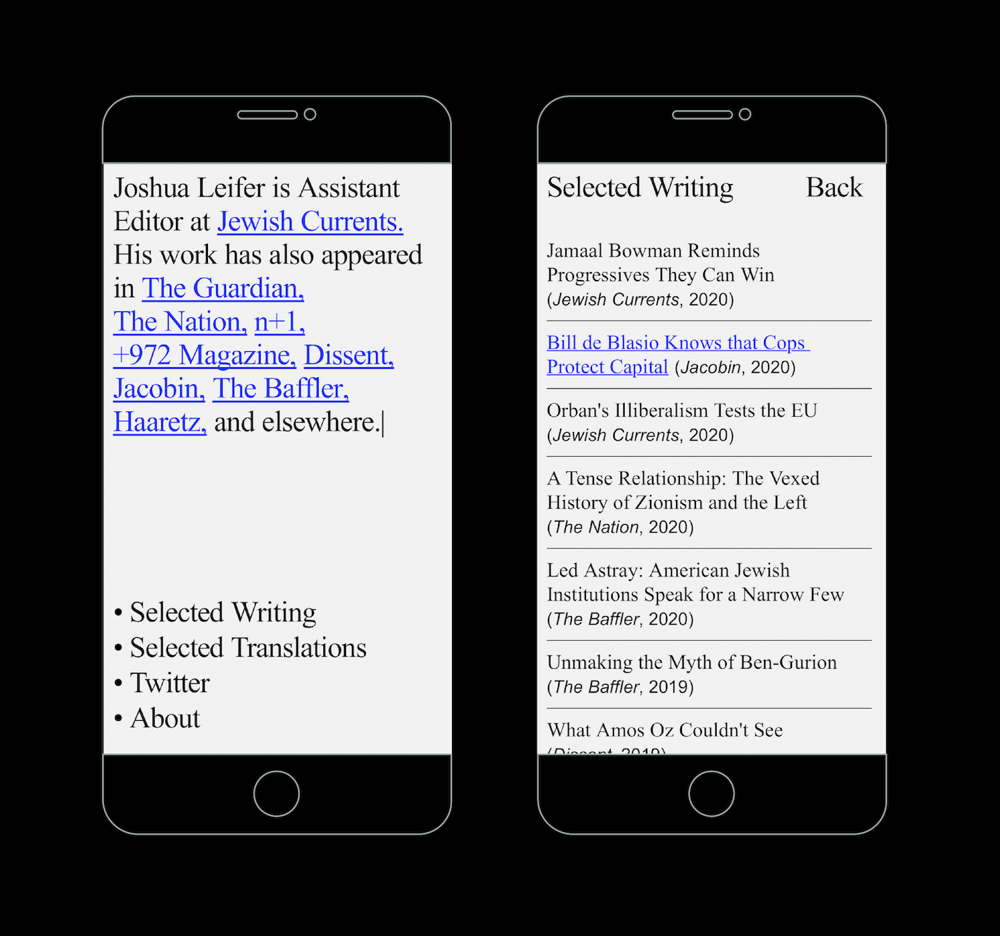
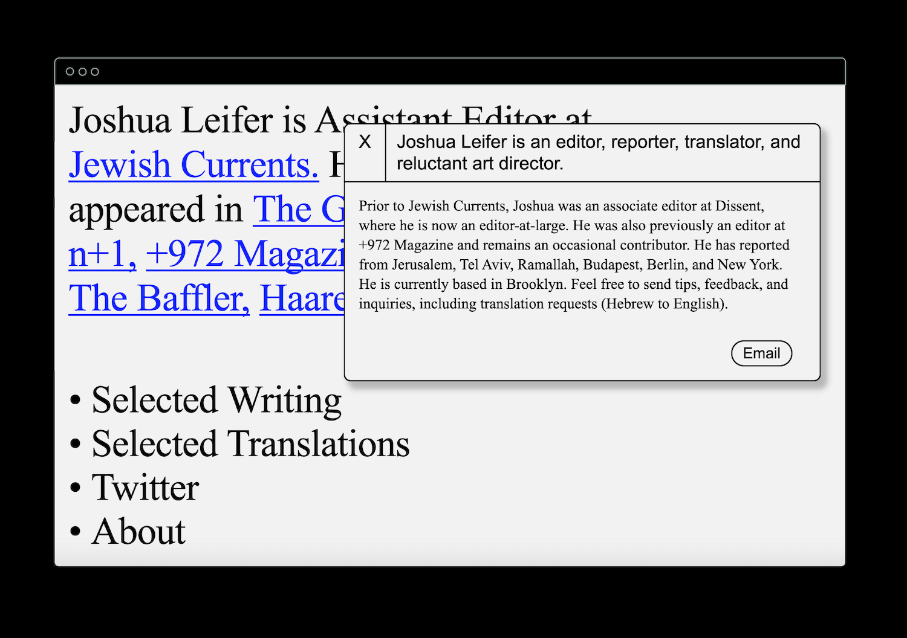
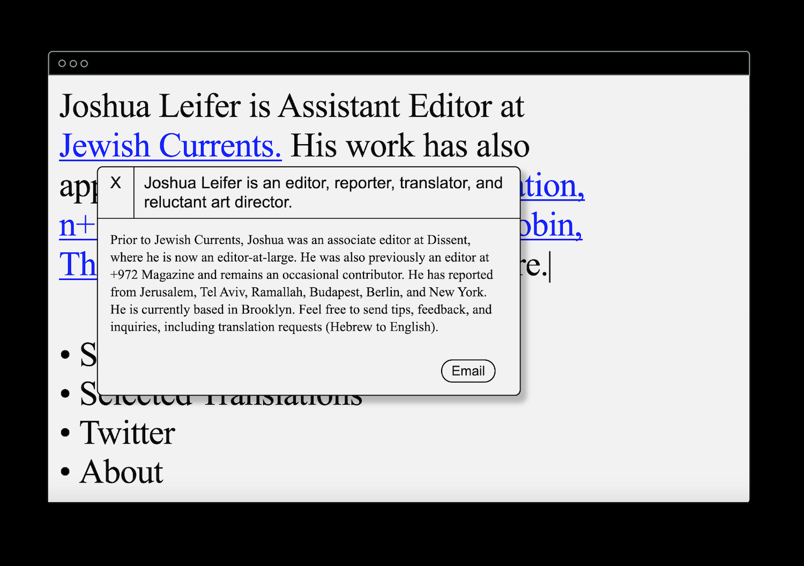
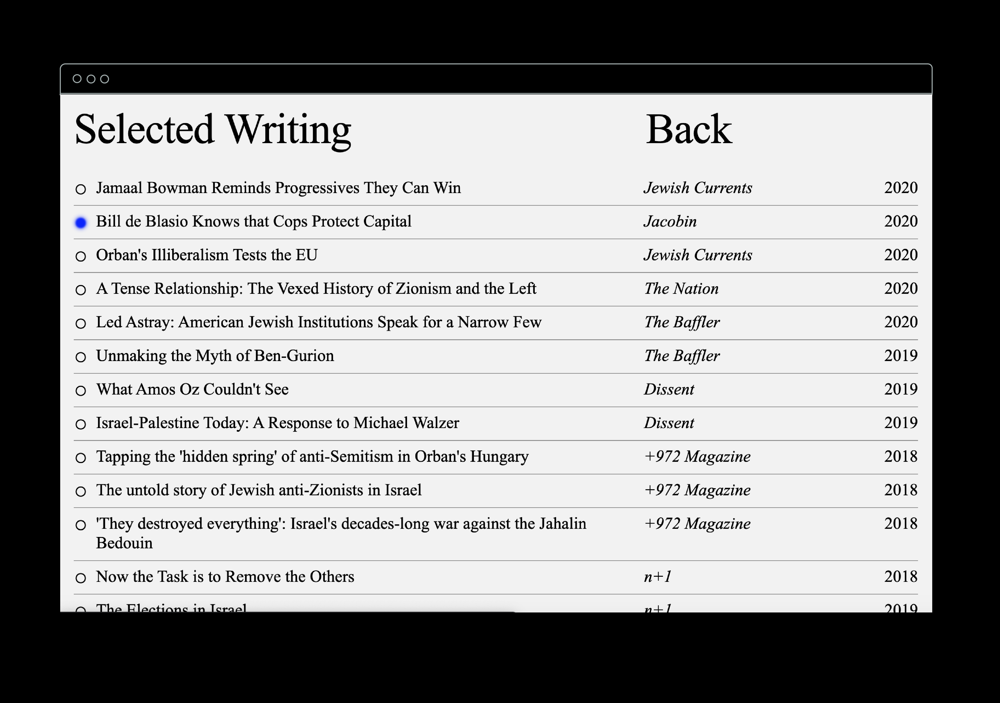
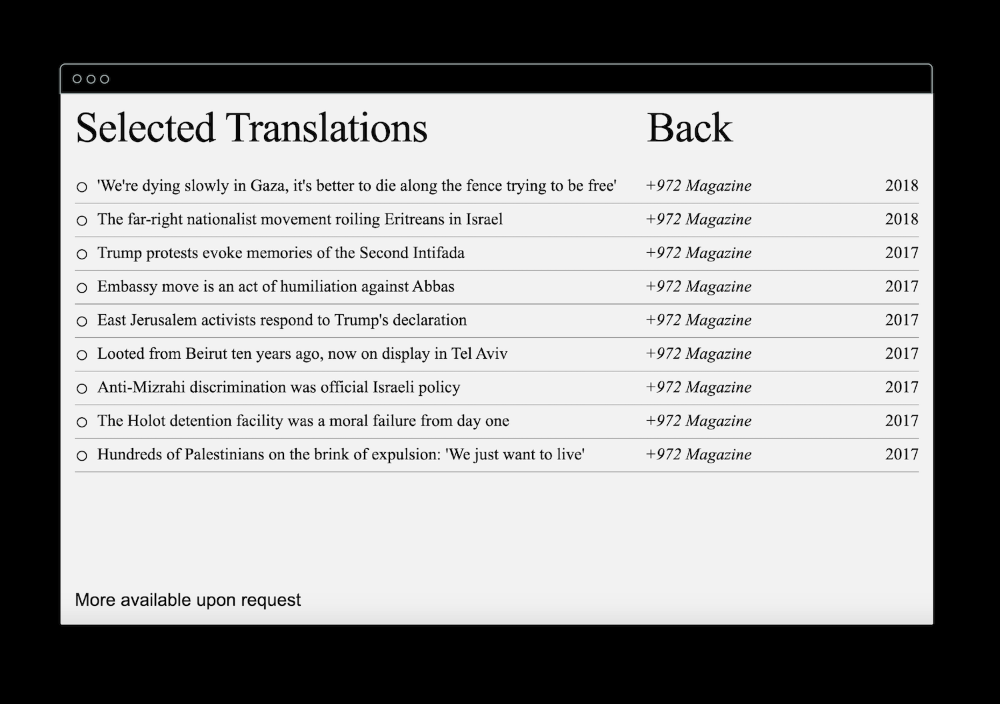

An animated typing effect and stripped-down formatting for writer, editor, and reporter Joshua Leifer.
Designed to reference the editorial process, the site features word processor-inspired typography, a draggable information panel, and a bibliography-inspired mobile index.
Visit the live site here.

Joshua Leifer dotcom, 2020




